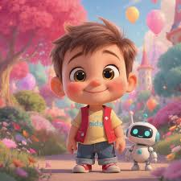

|
 |
NICKNAME:kyblySở thíchTôi có niềm đam mê đặc biệt với lĩnh vực công nghệ và game.Tôi thích tìm hiểu cách một trò chơi được xây dựng ,trải nghiệm nhiều thể loại khác nhau để học hỏi về thiết kế, gameplay và cách kể chuyện trong game. Ngoài ra, tôi cũng thích học thêm về đồ họa, lập trình và các công cụ phát triển game để nâng cao kỹ năng cá nhân. Ước mơƯớc mơ của tôi là được tham gia vào một công ty làm game có tiếng, nơi tôi có thể học hỏi từ các chuyên gia và đóng góp vào những dự án chất lượng, sáng tạo và có tầm ảnh hưởng. Tôi mong muốn được trở thành một phần của đội ngũ tạo ra những sản phẩm mang lại cảm xúc và trải nghiệm độc đáo cho người chơi. Dự định tương lai trong 5 năm tớiCải thiện trình độ học vấn |